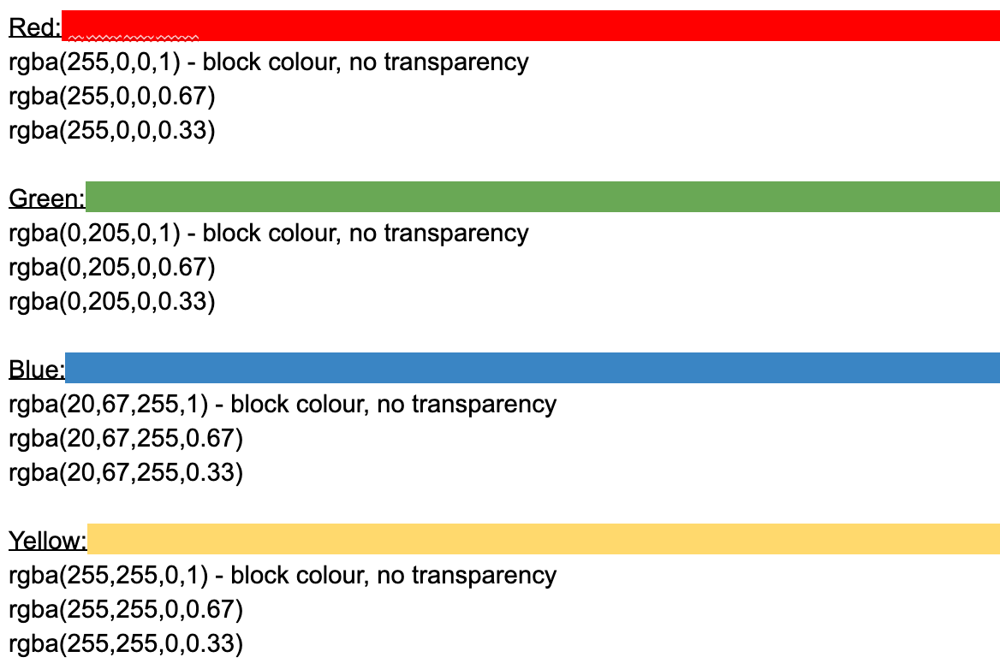
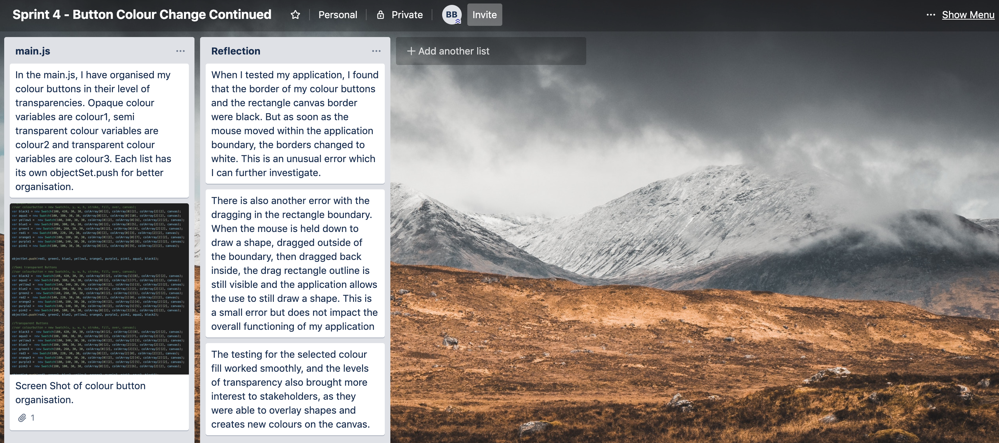

colour buttons this is the fourth version of the application
Sprint 4
My aim for this sprint is to create buttons to select colour

This was my initial colour palette to start with, using 4 colours and 3 different levels of transparency. I would then build my colour palette by expanding my colArrays and coding more buttons in the main.js file.
My trello page:

My video testing:
Issue 1:This video test shows that there is an issue with the colour button and rectangle borders, as the borders change from black to white when the mouse moves within the boundary of the application.
Issue 2: Another issue that we see in the video is when the rectangle is dragged outside of the boundary then back within the boundary, the dragged rectangle reappears.